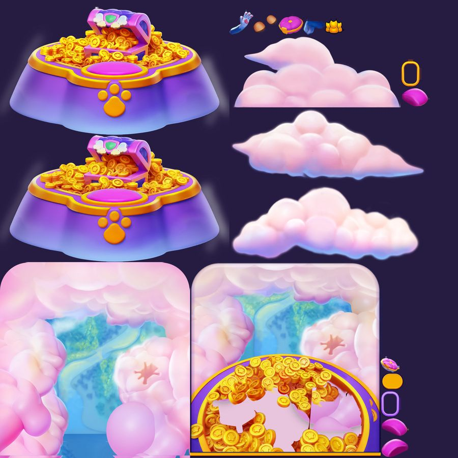

Sky Jump — đua leo thang (lava tournament)
Một cuộc đua loại trực tiếp: giá trị nằm ở sống sót tới đích và chia quỹ thưởng với những người cùng thắng.
Chưa có case chính trong hai lượt review 15–16/11. Nội dung theo mã/config; ảnh ngữ cảnh không được tính thành playtest tính năng. Xem bằng chứng và phần còn thiếu.
Thiết kế chi tiết
Tóm tắt thiết kế
Một cuộc đua loại trực tiếp: giá trị nằm ở sống sót tới đích và chia quỹ thưởng với những người cùng thắng.
Join → thắng leo bậc → thua rơi khỏi giải → kết quả → chia quỹ → chờ lượt mới.
Diễn giải thiết kế từ nguồn đã đối chiếu; outcome là expected, không phải lượt playtest mới. Các giá trị default/native có build riêng, không tự coi đang hiệu lực production.
Chưa có ảnh chụp màn hình cho tính năng này trong nguồn đã kiểm. Ảnh tài nguyên (nếu có) nằm ở hồ sơ hình ảnh; không thay cho screenshot playtest.
Luồng người chơi từng bước
- 01
Join thang đua
Người chơi và hệ thốngTham gia giải đang mở.
Điều kiện / luật: Danh tính và cửa sổ thời gian của giải đến từ response.
Kết quả theo đặc tả: Người chơi xuất hiện trên thang của đúng giải.
Nguồn: SkyJump.json · use_cases/2 - 02
Rơi khỏi giải
Người chơi và hệ thốngThua một level khi đang tham gia.
Điều kiện / luật: Score = -1 là trạng thái bị loại trong giải đó, không phải về 0 để leo lại ngay trong cùng lượt.
Kết quả theo đặc tả: Lượt giải đi theo nhánh thua.
Nguồn: SkyJump.json · use_cases/4 - 03
Chia quỹ cho người thắng
Người chơi và hệ thốngĐạt bậc 10 và xem kết quả khi giải chốt.
Điều kiện / luật: Quỹ mặc định
 10.000 coin chia cho số người thắng, mẫu số tối thiểu là 1.
10.000 coin chia cho số người thắng, mẫu số tối thiểu là 1.Kết quả theo đặc tả: Phần riêng thay đổi theo số người cùng thắng, không phải ai cũng nhận
10.000 coin.Nguồn: SkyJump.json · use_cases/8
Quy tắc cần nắm
| Quy tắc | Hành vi theo nguồn | Căn cứ |
|---|---|---|
| Join thang đua | Danh tính và cửa sổ thời gian của giải đến từ response. | Nguồn: SkyJump.json · use_cases/2 |
| Rơi khỏi giải | Score = -1 là trạng thái bị loại trong giải đó, không phải về 0 để leo lại ngay trong cùng lượt. | Nguồn: SkyJump.json · use_cases/4 |
| Chia quỹ cho người thắng | Quỹ mặc định 10.000 coin chia cho số người thắng, mẫu số tối thiểu là 1. | Nguồn: SkyJump.json · use_cases/8 |
Số liệu & phần thưởng
Phần thưởng
PHẦN THƯỞNG SKY JUMP (SkyJumpConfigModel.json, client default)
| Mốc | Điều kiện | Phần thưởng |
|---|---|---|
| Thắng (1 người) | Đạt bậc 10 và là người thắng duy nhất |  10.000Coin 10.000Coin |
| Thắng (2 người) | Đạt bậc 10, có 2 người thắng | 5.000 coin mỗi người |
| Thắng (4 người) | Đạt bậc 10, có 4 người thắng | 2.500 coin mỗi người |
| Thắng (10 người) | Đạt bậc 10, có 10 người thắng | 1.000 coin mỗi người |
| Thắng (N người) | Đạt bậc 10 trước khi hết giờ | 10.000 / N coin (RewardsAsCoin / GetWinnerCount tối thiểu chia cho 1) |
| Thua / bị loại | Score = -1 hoặc chưa đạt bậc 10 khi hết giờ | Không có thưởng |
THANG BẬC VÀ ĐIỂM
| Mốc | Điều kiện | Kết quả |
|---|---|---|
| Bậc 0 | Vừa Join giải | Score = 0 |
| Mỗi bậc | Thắng 1 level | Score 1 (TryIncreaseScore) |
| Bậc 10 | Thắng 10 level liên tiếp không thua | Đạt GetMaxReachableScore() = 10 đủ điều kiện thắng |
| Rơi | Thua 1 level bất kỳ | Score = -1 bị loại vĩnh viễn trong giải đó |
TRẠNG THÁI SỰ KIỆN (enum SkyJumpStateType)
| Mã | Trạng thái | Ý nghĩa |
|---|---|---|
| 0 | Disable | SkyJumpConfigModel.IsEnabled = false |
| 1 | ProgressNotEnough | Level người chơi < FirstLevelToShow (120) |
| 2 | NoCache | Chưa fetch được dữ liệu giải |
| 3 | Join | Có giải nhưng chưa tham gia |
| 4 | InProgress | Đang đua |
| 5 | FinishedByLocal | Client xác định giải đã kết thúc |
| 6 | FinishedByRemote | Server báo is_finished |
| 8 | ClaimedLocally | Đã nhận thưởng (không có giá trị 7) |
TRẠNG THÁI POPUP VÀ NGUỒN MỞ
| Enum | Giá trị | Ý nghĩa |
|---|---|---|
| SkyJumpPopUpState | Disabled=0, Join=1, FirstShowEver=2, FirstShow=3, InProgress=4, Result=5, JoinIntroduced=6 | Layout popup theo giai đoạn |
| SkyJumpImpressionSource | None=0, LobbyIcon=1, EventJoin=2, EventEnd=3, ScoreIncreased=4 | Nguồn mở popup gửi kèm analytics |
Phần thưởng theo code
| Ngữ cảnh | Phần thưởng | Evidence |
|---|---|---|
| Đạt bậc 10 trước khi hết giờ | Coin = RewardsAsCoin (10.000 mặc định) / số người thắng | SkyJumpService.GetPlayerReward; SkyJumpService.GetWinnerCount |
| Không đạt bậc 10 hoặc bị loại | Không có thưởng | SkyJumpService.DidPlayerLost; SkyJumpService.ClaimLocally |
Số liệu chính
| Chỉ số | Giá trị | Nguồn |
|---|---|---|
| Bật mặc định (client) | false | SkyJumpConfigModel.json: IsEnabled |
| EventType (tournament_type) | 1 | SkyJumpConfigModel.json: EventType |
| Level tối thiểu | 120 | SkyJumpConfigModel.json: FirstLevelToShow |
| Tổng giải thưởng | 10.000 coin | SkyJumpConfigModel.json: RewardsAsCoin |
| Số bậc tối đa | 10 | SkyJumpService.GetMaxReachableScore |
| Điểm khi rơi | -1 | SkyJumpService.TryFall |
| Điều kiện thắng | Score >= 10 và state thuộc {5, 6} | SkyJumpService.DidPlayerWin |
| Loại tiền thưởng | CurrencyType 1 (Coin) | SkyJumpService.GetPlayerReward |
| Số người thắng tối thiểu khi chia thưởng | 1 | SkyJumpService.GetWinnerCount |
| Số trạng thái sự kiện | 8 giá trị (0–6 và 8) | SkyJumpStateType |
| Số trạng thái popup | 7 (Disabled=0 … JoinIntroduced=6) | SkyJumpPopUpState |
| Số nguồn mở popup | 5 (None=0 … ScoreIncreased=4) | SkyJumpImpressionSource |
| Endpoint lấy bảng xếp hạng | /v1/get-lava-leaderboard | skyJumpGetUrl |
| Endpoint tham gia | /v1/join-lava-tournament | skyJumpJoinUrl |
| Endpoint nhận thưởng | /v1/claim-lava-tournament | skyJumpClaimUrl |
| Endpoint lịch giải kế | /v1/get-lava-starttime | skyJumpGetNextTournamentStartTimeUrl |
| Schema FlatBuffer | magicsort.schemas.v1.liveops.lava_leaderboard | SkyJumpRemoteService |
| Số điểm vào tính năng | 7 | SkyJump.entry_points |
| Số sự kiện analytics | 6 | SkyJump.analytics |
| Tên khối đồng bộ | SkyJumpSyncModel | SkyJumpDataService.GetSyncName |
Các quyết định trong luồng
| Tình huống | Cách xử lý theo nguồn | Căn cứ |
|---|---|---|
| Vì sao phải diễn đạt là quỹ thưởng thay vì quà cố định? | Phép chia làm đổi giá trị của từng chiến thắng; nhãn quỹ 10.000 coin không phải lời hứa mỗi người thắng đều nhận đủ số đó. | Suy luận thiết kế từ cơ chế có nguồn, chưa đo hiệu quả. |
Nhánh lỗi và phục hồi
| Điều kiện | Hành vi mong đợi | Phạm vi đã kiểm |
|---|---|---|
| Gián đoạn hoặc kết thúc Sky Jump (đua leo thang) | Offline hoặc retry không tự đưa người đã bị loại trở lại cùng giải; cần trạng thái hợp lệ của giải kế tiếp. | Theo source và UC trong dossier; các dependency backend/sync/RNG vẫn cần kiểm riêng. |
Nhận định & vận dụng
Phép chia làm đổi giá trị của từng chiến thắng; nhãn quỹ 10.000 coin không phải lời hứa mỗi người thắng đều nhận đủ số đó.
Phân tích thiết kế, không phải kết quả đo cohort.
Ảnh chụp bổ sung & nguồn bằng chứng
Chưa có screenshot trong nguồn hiện có; giữ mục này để bổ sung khi có bằng chứng.
Case đầy đủ: expected, actual và ledger · Ảnh lịch sử và tài nguyên gốc
Tổng quan & điều kiện mở
Mô tả
- Sky Jump (backend gọi là 'lava tournament', endpoint /v1/*-lava-*) là giải đấu loại trực tiếp theo bậc thang.
- Người chơi Join vào một nhóm cùng lúc; mỗi lần thắng level thì leo lên 1 bậc (Score + 1).
- Mỗi lần THUA thì rơi khỏi giải: TryFall đặt Score = -1 và người chơi bị loại vĩnh viễn trong giải đó.
- Bậc tối đa là 10 (GetMaxReachableScore trả 10); ai leo tới bậc 10 trước khi hết giờ là người thắng.
- Toàn bộ giải thưởng RewardsAsCoin (mặc định 10.000 coin) được CHIA ĐỀU cho số người thắng.
- Số người thắng tối thiểu tính là 1, nên người thắng duy nhất ôm trọn 10.000 coin.
- UI hiển thị từng bậc thang với avatar người đang đứng ở bậc đó và người đã rơi, tạo cảm giác đua trực tiếp.
- Sau khi giải kết thúc, client hỏi thời gian giải kế tiếp để hiển thị đồng hồ chờ.
- Trạng thái sự kiện có 8 giá trị từ Disable(0) tới ClaimedLocally(8) — lưu ý không có giá trị 7.
Mở khóa & điểm vào
SkyJumpStateService.GetEventState(): Disable(0) nếu SkyJumpConfigModel.IsEnabled == false; ProgressNotEnough(1) nếu level < FirstLevelToShow; NoCache(2) nếu chưa fetch được; Join(3) khi có giải nhưng chưa tham gia; InProgress(4) khi đang đua; FinishedByLocal(5)/FinishedByRemote(6) khi kết thúc; ClaimedLocally(8) sau khi nhận thưởng. Client default: IsEnabled=false, EventType=1, FirstLevelToShow=120, RewardsAsCoin=10000 (Resources/defaultconfigs/SkyJumpConfigModel.json).
Điểm vào:
- SkyJumpLobbyButton ở lobby (IsLobbyIconVisible), kèm SkyJumpLobbyButtonTimer đếm ngược
- SkyJumpJoinPopUp — mời tham gia (ShouldShowJoinPopup / CanShowJoinPopupForce / ShouldOpenJoinPopUpAutomaticallyOnLobbyReturn)
- SkyJumpPopUp — màn hình thang đua (SkyJumpPopUpArguments, impression source)
- SkyJumpSearchPopUp — hoạt ảnh 'đang tìm đối thủ' sau khi Join
- Tự mở khi về lobby nếu vừa lên bậc (ShouldOpenStepIncreasedOnLobbyReturn) hoặc khi có kết quả (ShouldOpenResultOnLobbyReturn), hoặc khi mở app (ShouldOpenAutomaticallyOnSessionStart)
- SkyJumpInfoPopUp qua SkyJumpInfoButton
- SkyJumpAreYouSureView — cảnh báo mất suất khi định thoát level (ShouldShowAreYouSure)
- SkyJumpTryAgainCommand — nút chơi lại
Các sự kiện liên quan
Luồng chi tiết theo nguồn
Cách hoạt động
- InitializeData() nạp cache và CacheProfileImages() để chuẩn bị avatar người chơi.
- IntervalUpdate/SendGetRequest → ShouldSendGetRequest() → GetRequest() gọi SkyJumpRemoteService.Get(eventType, tournamentId, score) tới /v1/get-lava-leaderboard.
- Payload SkyJumpGetRequestModel{tournament_id, tournament_type, score} vừa lấy trạng thái vừa đẩy điểm hiện tại lên server.
- Response SkyJumpResponseModel trả tournament_id, start_time, finish_time, is_finished, is_claimed, user_score, user_max_score, user_details_by_steps và players_images.
- ChangeTournamentCache(response) ghi SkyJumpCacheModel và gọi CacheProfileImages() để tải avatar.
- SkyJumpStateService.GetEventState() phân trạng thái: Disable(0) khi IsEnabled = false, ProgressNotEnough(1) khi level < 120, NoCache(2) khi chưa fetch được, Join(3) khi có giải chưa tham gia.
- Người chơi bấm Join: CanJoinTournament() → SkyJumpService.Join() gọi /v1/join-lava-tournament với SkyJumpJoinRequestModel{tournament_type}; analytics bắn sky_jump_joined.
- SkyJumpSearchPopUp chạy hoạt ảnh 'đang tìm đối thủ' bằng GetViewModelsForSearchAnimation(); state chuyển sang InProgress(4).
- Thắng một level: TryIncreaseScore() (nếu CanIncreaseScore()) → SkyJumpDataService.IncreaseScore() tăng Score thêm 1 và cập nhật MaxScoreReached.
- Thua một level: TryFall() (nếu CanFall()) → SkyJumpDataService.Fall() đặt Score = -1; analytics bắn sky_jump_lost kèm lost_step.
- UI thang đua dùng GetViewModelsInCurrentScore() / GetViewModelsInMaxScore() / GetViewModelsInPreviousScore() để tách hai danh sách: người còn đứng (all_user_ids) và người đã rơi (loser_user_ids).
- GetUserCountInStep(step) đếm số người ở mỗi bậc, hiển thị mật độ cạnh tranh trên thang.
- Kết thúc khi hết giờ (GetRemainingSeconds/GetEndDate) hoặc server báo is_finished → state FinishedByLocal(5) hoặc FinishedByRemote(6).
- DidPlayerWin() đúng khi Score >= 10 và state thuộc {5, 6}; ngược lại DidPlayerLost().
- Nhận thưởng: ShouldSendClaimRequest() → SendClaimRequest() gọi /v1/claim-lava-tournament; GetPlayerReward() tạo RewardModel{CurrencyType = 1 (Coin), Amount = RewardsAsCoin / GetWinnerCount()}.
- ClaimLocally(didWin) đặt IsClaimedLocally và IncreaseWinRecord() nếu thắng; state chuyển sang ClaimedLocally(8).
- Cuối cùng SendGetNextTournamentStartTimeRequest() gọi /v1/get-lava-starttime lấy {tournament_type, tournament_start_time, tournament_end_time} cho đồng hồ chờ; ScheduleLeaderboardFetchOnTimerEnd() tự fetch lại khi đồng hồ về 0.
Luồng chi tiết theo code
InitializeData() nạp cache và CacheProfileImages(). IntervalUpdate/SendGetRequest → SkyJumpStateService.ShouldSendGetRequest() → GetRequest() gọi SkyJumpRemoteService.Get(eventType, tournamentId, score) (hoặc GetWithFlatBuffer, schema magicsort.schemas.v1.liveops.lava_leaderboard) tới skyJumpGetUrl (/v1/get-lava-leaderboard) với SkyJumpGetRequestModel{tournament_id, tournament_type, score}. Response SkyJumpResponseModel{tournament_id, tournament_type, start_time, finish_time, is_finished, is_claimed, user_score, user_max_score, user_details_by_steps: Dictionary<step, {all_user_ids, loser_user_ids, total_user_count}>, players_images}. ChangeTournamentCache(response) ghi SkyJumpCacheModel và gọi CacheProfileImages(). Join: SkyJumpStateService.CanJoinTournament() → SkyJumpService.Join() gọi SkyJumpRemoteService.Join(eventType) tới skyJumpJoinUrl (/v1/join-lava-tournament) với SkyJumpJoinRequestModel{tournament_type}; analytics sky_jump_joined; SkyJumpSearchPopUp chạy hoạt ảnh tìm người chơi bằng GetViewModelsForSearchAnimation(). Trong giải: thắng level → TryIncreaseScore() (nếu CanIncreaseScore()) → SkyJumpDataService.IncreaseScore() (Score+1, cập nhật MaxScoreReached); thua level → TryFall() (nếu CanFall()) → SkyJumpDataService.Fall() đặt Score = -1 (pseudo-C obj._Score = -1;), analytics sky_jump_lost với lost_step. UI: GetViewModelsInCurrentScore()/GetViewModelsInMaxScore()/GetViewModelsInPreviousScore() trả 2 danh sách (người còn đứng, người đã rơi) cho từng bậc dựa vào all_user_ids/loser_user_ids; GetUserCountInStep(step) đếm người ở bậc. Kết thúc: hết giờ (GetRemainingSeconds/GetEndDate) hoặc server báo is_finished → state FinishedByLocal(5)/FinishedByRemote(6). DidPlayerWin() = Score >= 10 và state ∈ {5,6}; DidPlayerLost() = ngược lại. Nhận thưởng: ShouldSendClaimRequest() → SendClaimRequest() gọi Claim(eventType, tournamentId, score) tới skyJumpClaimUrl (/v1/claim-lava-tournament); GetPlayerReward() tạo RewardModel{CurrencyType = 1 (Coin), Amount = RewardsAsCoin / GetWinnerCount()} (winnerCount tối thiểu 1); ClaimLocally(didWin) đặt IsClaimedLocally và IncreaseWinRecord() nếu thắng; state → ClaimedLocally(8). Sau đó SendGetNextTournamentStartTimeRequest() gọi skyJumpGetNextTournamentStartTimeUrl (/v1/get-lava-starttime) trả {tournament_type, tournament_start_time, tournament_end_time} để SkyJumpNextTournamentStartTimer/EndTimer đếm ngược; ScheduleLeaderboardFetchOnTimerEnd() tự fetch lại khi đồng hồ về 0.
Use case (15)
Đặc tả UC mô tả hành vi theo nguồn. Kết quả mong đợi không phải kết quả đã chạy; case quan sát được liên kết riêng ở từng UC.
Bấm vào từng use case để mở. Mở/đóng tất cả
UC-01 Kiểm tra điều kiện và hiện icon Sky Jump
Chưa có case trực tiếp trong hai lượt review 15–16/11.
Các bước- SkyJumpStateService.GetConfig() lấy SkyJumpConfigModel
- GetEventState() trả Disable(0)/ProgressNotEnough(1)/NoCache(2)/Join(3)/InProgress(4)/FinishedByLocal(5)/FinishedByRemote(6)/ClaimedLocally(8)
- IsLobbyIconVisible() quyết định hiện SkyJumpLobbyButton
- GetLiveOpsStateForLevelEvent() cung cấp trạng thái cho analytics của level
| Actor | System |
|---|---|
| Trigger | Vào lobby / IntervalUpdate |
| Điều kiện | RemoteConfigs sẵn sàng |
| Kết quả mong đợi theo nguồn | Icon lobby hiện/ẩn; các luồng tăng/giảm điểm chỉ chạy ở state phù hợp |
| Quy tắc / số liệu | Client default: IsEnabled=false, FirstLevelToShow=120, EventType=1 |
| Bằng chứng đặc tả | SkyJumpStateService.GetEventState; SkyJumpStateService.IsLobbyIconVisible; SkyJumpStateService.GetLiveOpsStateForLevelEvent; SkyJumpService.GetLiveOpsStateForLevelEvent |
UC-02 Lấy dữ liệu giải hiện tại
Chưa có case trực tiếp trong hai lượt review 15–16/11.
Các bước- SkyJumpService.TryFetchCurrentEvent() → SendGetRequest() → GetRequest()
- SkyJumpRemoteService.Get(eventType, tournamentId, score) hoặc GetWithFlatBuffer (schema lava_leaderboard) tới skyJumpGetUrl (/v1/get-lava-leaderboard)
- Payload SkyJumpGetRequestModel{tournament_id, tournament_type, score} — điểm client cũng được đẩy kèm mỗi lần Get
- ChangeTournamentCache(response) ghi SkyJumpCacheModel; CacheProfileImages() nạp players_images
- Nếu HTTP status = NotActiveStatusCode → sự kiện không hoạt động
| Actor | Server |
|---|---|
| Trigger | InitializeData / IntervalUpdate khi ShouldSendGetRequest() |
| Điều kiện | Sự kiện bật |
| Kết quả mong đợi theo nguồn | Cache có bậc của mình, danh sách người theo bậc, thời gian giải |
| Quy tắc / số liệu | user_details_by_steps là Dictionary<step, {all_user_ids, loser_user_ids, total_user_count}> |
| Bằng chứng đặc tả | SkyJumpService.TryFetchCurrentEvent; SkyJumpService.SendGetRequest; SkyJumpService.GetRequest; SkyJumpRemoteService.Get; SkyJumpService.ChangeTournamentCache; SkyJumpService.CacheProfileImages; SkyJumpService.NotActiveStatusCode |
UC-03 Tham gia giải (Join)
Chưa có case trực tiếp trong hai lượt review 15–16/11.
Các bước- SkyJumpService.Join() (Task<bool>)
- SkyJumpRemoteService.Join(eventType) → skyJumpJoinUrl (/v1/join-lava-tournament), payload SkyJumpJoinRequestModel{tournament_type}
- OnJoinPopupOpened() / SkyJumpDataService.SetIsJoinPopupIntroduced(true)
- SkyJumpSearchPopUp mở, chạy GetViewModelsForSearchAnimation() + SkyJumpSearchAnimationView + SkyJumpSearchUserViewRevealAnimation
- EventSender.SendSkyJumpJoinedEvent (sky_jump_joined)
| Actor | Player |
|---|---|
| Trigger | Bấm Join ở SkyJumpJoinPopUp |
| Điều kiện | SkyJumpStateService.CanJoinTournament() == true (state Join(3)) |
| Kết quả mong đợi theo nguồn | Người chơi vào bậc 0 của thang, state chuyển InProgress(4) |
| Quy tắc / số liệu | TryMarkForceShowedJoinPopUpForSession()/ForceShowedJoinPopUpForThisSession chỉ ép mở popup Join 1 lần mỗi phiên |
| Bằng chứng đặc tả | SkyJumpService.Join; SkyJumpRemoteService.Join; SkyJumpService.OnJoinPopupOpened; SkyJumpDataService.SetIsJoinPopupIntroduced; SkyJumpService.GetViewModelsForSearchAnimation; SkyJumpService.TryMarkForceShowedJoinPopUpForSession |
UC-04 Thắng level → leo lên 1 bậc
Chưa có case trực tiếp trong hai lượt review 15–16/11.
Các bước- SkyJumpService.TryIncreaseScore() (trả bool)
- SkyJumpDataService.IncreaseScore() tăng SkyJumpCacheModel.Score và MaxScoreReached
- Điểm mới được đẩy lên server ở request Get/Claim kế tiếp (trường score)
- IsScoreIncreasedSinceLastSeen() bật animation khi về lobby; UpdateLastSeen() / SkyJumpDataService.UpdateLastSeen()
| Actor | Player |
|---|---|
| Trigger | Hoàn thành level |
| Điều kiện | SkyJumpStateService.CanIncreaseScore() == true (state InProgress) |
| Kết quả mong đợi theo nguồn | Avatar người chơi nhảy lên bậc kế tiếp trên SkyJumpStepView |
| Quy tắc / số liệu | Bậc tối đa = 10 (SkyJumpService.GetMaxReachableScore trả 10); IsPlayerReachedMaxScore() khi Score >= 10 |
| Bằng chứng đặc tả | SkyJumpService.TryIncreaseScore; SkyJumpDataService.IncreaseScore; SkyJumpService.GetMaxReachableScore; SkyJumpService.IsPlayerReachedMaxScore; SkyJumpService.IsScoreIncreasedSinceLastSeen; SkyJumpService.UpdateLastSeen |
UC-05 Thua level → rơi khỏi giải (bị loại)
Chưa có case trực tiếp trong hai lượt review 15–16/11.
Các bước- SkyJumpService.TryFall()
- SkyJumpDataService.Fall() đặt SkyJumpCacheModel.Score = -1 (pseudo-C
obj._Score = -1;) - DidPlayerFallDown() = true để chạy hoạt ảnh rơi (SkyJumpCloudAnimationView)
- EventSender.SendSkyJumpLost (sky_jump_lost) với lost_step
- Người chơi xuất hiện trong loser_user_ids ở bậc tương ứng
| Actor | Player |
|---|---|
| Trigger | Thua hoặc bỏ level |
| Điều kiện | SkyJumpStateService.CanFall() == true |
| Kết quả mong đợi theo nguồn | Bị loại khỏi giải hiện tại, không thể leo tiếp; phải chờ giải kế |
| Quy tắc / số liệu | Đây là cơ chế loại trực tiếp — khác với TowerWinStreak (chỉ reset về 0 và chơi tiếp) |
| Bằng chứng đặc tả | SkyJumpService.TryFall; SkyJumpDataService.Fall; SkyJumpStateService.CanFall; SkyJumpService.DidPlayerFallDown; EventSender.SendSkyJumpLost |
UC-06 Cảnh báo trước khi thoát level
Chưa có case trực tiếp trong hai lượt review 15–16/11.
Các bước- SkyJumpStateService.ShouldShowAreYouSure()
- SkyJumpAreYouSureView (AreYouSureContainer) + SkyJumpAreYouSureAnimationView theo SkyJumpAreYouSureAnimationConfig
- Nhấn mạnh rằng thua = bị loại khỏi giải
| Actor | Player |
|---|---|
| Trigger | Bấm thoát / sắp thua trong level |
| Điều kiện | Đang tham gia Sky Jump |
| Kết quả mong đợi theo nguồn | Tăng tỉ lệ dùng booster/mua tiếp lượt |
| Quy tắc / số liệu | - |
| Bằng chứng đặc tả | SkyJumpStateService.ShouldShowAreYouSure; SkyJumpAreYouSureView; SkyJumpAreYouSureAnimationView |
UC-07 Xem thang đua và đối thủ theo từng bậc
Chưa có case trực tiếp trong hai lượt review 15–16/11.
Các bước- SkyJumpService.GetUsersInThisStep(step) trả (danh sách người còn trụ, danh sách người đã rơi) — dùng DidPlayerLost để phân loại
- GetViewModelsInCurrentScore() / GetViewModelsInMaxScore() / GetViewModelsInPreviousScore() cho 3 bậc quan trọng
- GetViewModel(playerImages, userId) dựng SkyJumpLeaderboardPlayerViewModel (ảnh 'fb' hoặc id ảnh)
- GetUserCountInStep(step) hiển thị số người ở mỗi bậc
- SkyJumpStepView + SkyJumpUserView render; SkyJumpTimer/SkyJumpLobbyButtonTimer đếm ngược
| Actor | Player |
|---|---|
| Trigger | Mở SkyJumpPopUp |
| Điều kiện | Có cache giải |
| Kết quả mong đợi theo nguồn | Người chơi thấy mình đang ở bậc nào so với đám đông |
| Quy tắc / số liệu | Avatar tải qua ProfileSpriteCacheService từ players_images |
| Bằng chứng đặc tả | SkyJumpService.GetUsersInThisStep; SkyJumpService.GetViewModelsInCurrentScore; SkyJumpService.GetViewModelsInMaxScore; SkyJumpService.GetViewModelsInPreviousScore; SkyJumpService.GetViewModel; SkyJumpService.GetUserCountInStep |
UC-08 Kết thúc giải và xác định thắng/thua
Chưa có case trực tiếp trong hai lượt review 15–16/11.
Các bước- GetRemainingSeconds() / GetEndDate() / GetStartTimeAsUnix() / GetEndTimeAsUnix() từ SkyJumpCacheModel.StartTime/FinishTime
- State → FinishedByLocal(5) hoặc FinishedByRemote(6); SkyJumpStateService.IsEventFinished()
- DidPlayerWin(): Score >= 10 (pseudo-C
9 < iVar2) VÀ state ∈ {5,6} (iVar3 - 5U < 2) - DidPlayerLost(): ngược lại
| Actor | System |
|---|---|
| Trigger | Hết giờ hoặc server trả is_finished |
| Điều kiện | Đã tham gia |
| Kết quả mong đợi theo nguồn | Popup chuyển sang SkyJumpPopUpState.Result(5) |
| Quy tắc / số liệu | Hai state Local/Remote để xử lý lệch giờ client-server |
| Bằng chứng đặc tả | SkyJumpService.DidPlayerWin; SkyJumpService.DidPlayerLost; SkyJumpService.GetRemainingSeconds; SkyJumpService.GetEndDate; SkyJumpStateService.IsEventFinished; SkyJumpStateService.GetPopUpState |
UC-09 Nhận thưởng chia đều cho người thắng
Chưa có case trực tiếp trong hai lượt review 15–16/11.
Các bước- SkyJumpService.GetWinnerCount() đếm số người đạt bậc tối đa (mặc định trả 1 nếu không xác định được)
- GetSharingRewardsWith() / GetSharingRewardsWithUserCount() liệt kê người cùng chia thưởng
- GetPlayerReward(): RewardModel{CurrencyType = 1 (Coin), Amount = RewardsAsCoin / winnerCount} — pseudo-C đặt
obj._CurrencyType = 1;và chia với mẫu số tối thiểu 1 - SendClaimRequest() → SkyJumpRemoteService.Claim(eventType, tournamentId, score) tới skyJumpClaimUrl (/v1/claim-lava-tournament), payload SkyJumpClaimRequestModel{tournament_id, tournament_type, score}
- ClaimLocally(didWin): đặt IsClaimedLocally = true; nếu thắng thì IncreaseWinRecord()
- _claimRequestedManuallyByUser phân biệt claim do người chơi bấm hay tự động
| Actor | Player |
|---|---|
| Trigger | Mở popup kết quả và bấm Claim |
| Điều kiện | DidPlayerWin() và ShouldSendClaimRequest() |
| Kết quả mong đợi theo nguồn | Coin vào túi; WinRecord (số lần vô địch) tăng; state → ClaimedLocally(8) |
| Quy tắc / số liệu | Client default RewardsAsCoin = 10000 — chia đều cho tất cả người đạt bậc 10 |
| Bằng chứng đặc tả | SkyJumpService.GetPlayerReward; SkyJumpService.GetWinnerCount; SkyJumpService.GetSharingRewardsWith; SkyJumpService.GetSharingRewardsWithUserCount; SkyJumpService.SendClaimRequest; SkyJumpService.ClaimLocally; SkyJumpDataService.SetClaimedLocally; SkyJumpService.IncreaseWinRecord |
UC-10 Chờ giải kế tiếp
Chưa có case trực tiếp trong hai lượt review 15–16/11.
Các bước- SkyJumpService.SendGetNextTournamentStartTimeRequest() → SkyJumpRemoteService.GetNextTournamentStartTime(eventType) tới skyJumpGetNextTournamentStartTimeUrl (/v1/get-lava-starttime)
- Response SkyJumpGetNextTournamentStartTimeResponseModel{tournament_type, tournament_start_time, tournament_end_time}; IsNextRaceIsAvailable = true
- GetNextTournamentStartTime() / GetNextTournamentEndTime() cho SkyJumpNextTournamentStartTimer / SkyJumpNextTournamentEndTimer
- ScheduleLeaderboardFetchOnTimerEnd() đặt callback fetch lại khi đồng hồ về 0 (SecondTimer)
- EventSender.SendSkyJumpWaitImpression (sky_jump_wait_impression) với remaining_penalty_duration
| Actor | System |
|---|---|
| Trigger | Giải hiện tại đã kết thúc/nhận thưởng xong |
| Điều kiện | - |
| Kết quả mong đợi theo nguồn | Người chơi thấy đồng hồ 'giải kế bắt đầu sau ...' và tự động vào giải mới |
| Quy tắc / số liệu | - |
| Bằng chứng đặc tả | SkyJumpService.SendGetNextTournamentStartTimeRequest; SkyJumpRemoteService.GetNextTournamentStartTime; SkyJumpService.GetNextTournamentStartTime; SkyJumpService.ScheduleLeaderboardFetchOnTimerEnd; SkyJumpService.IsNextRaceIsAvailable |
UC-11 Popup tự mở theo ngữ cảnh
Chưa có case trực tiếp trong hai lượt review 15–16/11.
Các bước- SkyJumpStateService.ShouldOpenStepIncreasedOnLobbyReturn(out source) — vừa lên bậc → source ScoreIncreased(4)
- ShouldOpenResultOnLobbyReturn(out source) — có kết quả → source EventEnd(3)
- ShouldOpenJoinPopUpAutomaticallyOnLobbyReturn(out source) — mời Join → source EventJoin(2)
- ShouldOpenAutomaticallyOnSessionStart(out source) khi mở app
- GetPopUpState() trả SkyJumpPopUpState: Disabled(0), Join(1), FirstShowEver(2), FirstShow(3), InProgress(4), Result(5), JoinIntroduced(6)
- EventSender.SendSkyJumpImpression(source) / SendSkyJumpJoinImpression(source)
- MarkEventIntroduced() / SkyJumpDataService.MarkEventIntroduced()
| Actor | System |
|---|---|
| Trigger | Về lobby hoặc mở app |
| Điều kiện | State phù hợp |
| Kết quả mong đợi theo nguồn | Người chơi luôn thấy diễn biến giải sau mỗi level |
| Quy tắc / số liệu | SkyJumpImpressionSource: None(0), LobbyIcon(1), EventJoin(2), EventEnd(3), ScoreIncreased(4) |
| Bằng chứng đặc tả | SkyJumpStateService.ShouldOpenStepIncreasedOnLobbyReturn; SkyJumpStateService.ShouldOpenResultOnLobbyReturn; SkyJumpStateService.ShouldOpenJoinPopUpAutomaticallyOnLobbyReturn; SkyJumpStateService.ShouldOpenAutomaticallyOnSessionStart; SkyJumpStateService.GetPopUpState; SkyJumpService.MarkEventIntroduced |
UC-12 Chơi lại ngay sau khi thua
Chưa có case trực tiếp trong hai lượt review 15–16/11.
Các bước- SkyJumpTryAgainCommand (ITryAgainCommand) chạy
- Đưa người chơi vào lại level để giữ nhịp đua
| Actor | Player |
|---|---|
| Trigger | Bấm Try Again ở màn thua |
| Điều kiện | - |
| Kết quả mong đợi theo nguồn | Giảm tỉ lệ bỏ giải sau khi thua |
| Quy tắc / số liệu | - |
| Bằng chứng đặc tả | SkyJumpTryAgainCommand |
UC-13 Kỷ lục vô địch và lịch sử
Chưa có case trực tiếp trong hai lượt review 15–16/11.
Các bước- SkyJumpService.GetWinRecord() / SkyJumpDataService.GetWinRecord() đọc SkyJumpSyncModel.WinRecord
- GetMaxScoreReached() đọc SkyJumpCacheModel.MaxScoreReached
- EventSender.SendSkyJumpInfoImpression (sky_jump_info_impression)
| Actor | Player |
|---|---|
| Trigger | Xem popup thông tin |
| Điều kiện | - |
| Kết quả mong đợi theo nguồn | Hiển thị số lần vô địch và bậc cao nhất từng đạt |
| Quy tắc / số liệu | WinRecord nằm trong khối sync nên xuyên thiết bị |
| Bằng chứng đặc tả | SkyJumpService.GetWinRecord; SkyJumpService.GetMaxScoreReached; SkyJumpDataService.IncreaseWinRecord; EventSender.SendSkyJumpInfoImpression |
UC-14 Offline / lỗi request
Chưa có case trực tiếp trong hai lượt review 15–16/11.
Các bước- State giữ NoCache(2) nếu chưa từng fetch được
- Join/Claim không thực hiện được; điểm vẫn tăng/giảm local và đẩy lên ở request kế
- IntervalUpdate thử lại; NotActiveStatusCode phân biệt 'sự kiện không chạy' với lỗi mạng
- SkyJumpRemoteService.Dispose() huỷ CancellationTokenSource
| Actor | System |
|---|---|
| Trigger | Get/Join/Claim thất bại |
| Điều kiện | - |
| Kết quả mong đợi theo nguồn | Không mất tiến độ; các thao tác server bị hoãn |
| Quy tắc / số liệu | Vì Score được gửi kèm mọi request Get, server luôn nhận được điểm mới nhất khi có mạng |
| Bằng chứng đặc tả | SkyJumpService.TryFetchCurrentEvent; SkyJumpService.NotActiveStatusCode; SkyJumpStateService.ShouldSendGetRequest; SkyJumpRemoteService.Dispose |
UC-15 Đồng bộ dữ liệu Sky Jump
Chưa có case trực tiếp trong hai lượt review 15–16/11.
Các bước- SkyJumpDataService.GetSyncName() = 'SkyJumpSyncModel'
- SerializeModelForSync() gửi SkyJumpSyncModel{IsEventIntroducedEverInLifeTime, WinRecord}
- OverwriteModelFromSync(data); DataSynced(); LateUpdate() lưu khi dirty
- SkyJumpCacheModel (bậc, danh sách người) KHÔNG nằm trong sync — fetch lại từ server
| Actor | Server |
|---|---|
| Trigger | Sync / đổi thiết bị |
| Điều kiện | ISyncable |
| Kết quả mong đợi theo nguồn | Kỷ lục vô địch giữ nguyên khi đổi máy; trạng thái giải lấy lại từ server |
| Quy tắc / số liệu | DeleteData() xoá khi reset tài khoản |
| Bằng chứng đặc tả | SkyJumpDataService.GetSyncName; SkyJumpDataService.SerializeModelForSync; SkyJumpDataService.OverwriteModelFromSync; SkyJumpDataService.DataSynced; SkyJumpDataService.DeleteData; SkyJumpModel.SkyJumpSyncModel |
Playtest & phần chưa xác minh
Case ghi lại một chuỗi thao tác và phạm vi quan sát. Các bước chưa chạy và hợp đồng server vẫn giữ trạng thái riêng.
Chưa có case chính trong hai lượt review gần nhất. Xem đặc tả, nguồn và điều kiện cần để kiểm nhánh dưới đây.
Điều kiện cần để kiểm tiếp
Nhánh UC cần kiểm tiếp
Chưa có case vòng 2 cho feature này. Tìm icon Sky Jump, mở ladder và waiting/info state nếu có; chụp join button rồi đóng trước join.
UC chưa có case: UC-01 UC-02 UC-03 UC-04 UC-05 UC-06 UC-07 UC-08 UC-09 UC-10 UC-11 UC-12 UC-13 UC-14 UC-15
Hợp đồng và phản hồi backend
Số người trong một nhóm đua và cách ghép nhóm do server quyết định (total_user_count).
Tổng user_count snapshot không cho algorithm grouping; cần backend response/cohort.
GetWinnerCount() đọc từ cache user_details_by_steps ở bậc tối đa; nếu cache chưa cập nhật thì trả 1 (người chơi nhận trọn 10.000 coin) — có thể lệch với server.
Test cache stale winner count và settlement response; fallback1 không đảm bảo payout10000 offline.
Phụ thuộc cần kiểm 3
Độ dài giải và khoảng nghỉ giữa hai giải hoàn toàn từ server (start_time/finish_time và /v1/get-lava-starttime).
So event/race startfinish và get-lava-starttime theo cùng instance; cần rotation mới để đo nghỉ/đổi giải.
Hồ sơ đầy đủ và trạng thái từng nhánh · Báo cáo đối soát 58 mục
Ảnh gốc & tài nguyên trong hồ sơ nền
Tài nguyên hình ảnh (1)
1 ảnh tài nguyên trong APK. Bấm ảnh để phóng to; ảnh chụp lịch sử mở PNG gốc. Nhãn UC dẫn tới use case tương ứng.


Segment & A/B
Giải và số người thắng: Cùng một quỹ nhưng quà cá nhân có thể khác giữa các lượt.
| Trục phân nhóm | Điều kiện chọn | Tác động thiết kế | Mức bằng chứng |
|---|---|---|---|
| Giải và số người thắng | Response xác định người ở từng bậc; số người thắng quyết định phần chia. | Cùng một quỹ nhưng quà cá nhân có thể khác giữa các lượt. | Số người thắng không phải nhóm chi tiêu; chưa biết thuật toán ghép người chơi ở backend. |
Assignment của tài khoản, tỷ lệ traffic và uplift: chưa được xác minh. Reward bucket, phân khúc thương mại và A/B experiment được phân biệt theo nguồn.
- Số người thắng không phải nhóm chi tiêu; chưa biết thuật toán ghép người chơi ở backend.
Tải tất cả dòng liên quan của feature · Registry 345 dòng nguồn duy nhất
Dữ liệu đầy đủ theo nguồn
Bản mặc định đóng gói trong APK 0.0.3129. Đây là dữ liệu có kiểu đầy đủ; config thực được server chọn cho một tài khoản là phạm vi khác.
SkyJumpConfigModel 4 giá trị / node rỗng
| Đường dẫn | Kiểu | Giá trị |
|---|---|---|
| $.IsEnabled | boolean | false |
| $.EventType | number | 1 |
| $.FirstLevelToShow | number | 120 |
| $.RewardsAsCoin | number | 10000 |
25 dòng cấu hình theo tất cả nguồn
Bảng nền có thể chứa preview giới hạn đã ghi nhãn. Model mặc định đầy đủ có kiểu ở trên; trường không có trong model giữ nguồn và trạng thái riêng.
Cấu hình (25)
Gộp mọi nguồn: const trong code, JSON mặc định trong Resources, bảng static, storage key, AB test, cờ server.
| Nguồn | Key | Kiểu | Giá trị | Ý nghĩa | Nơi định nghĩa |
|---|---|---|---|---|---|
| json default | IsEnabled | bool | false | Bật/tắt Sky Jump | Resources/defaultconfigs/SkyJumpConfigModel.json |
| json default | EventType | int | 1 | tournament_type gửi lên backend | SkyJumpConfigModel.json |
| json default | FirstLevelToShow | int | 120 | Level tối thiểu | SkyJumpConfigModel.json |
| json default | RewardsAsCoin | int | 10000 | Tổng giải thưởng coin, chia đều cho người thắng | SkyJumpConfigModel.json |
| code const | GetMaxReachableScore() | int | 10 | Số bậc tối đa của thang (hard-code) | SkyJumpService.GetMaxReachableScore (pseudo-C return 10;) |
| code const | Điểm khi rơi | int | -1 | Score = -1 nghĩa là đã bị loại | SkyJumpService.TryFall (pseudo-C obj._Score = -1;) |
| code const | Điều kiện thắng | expr | Score >= 10 && state ∈ {FinishedByLocal(5), FinishedByRemote(6)} | Xác định người thắng | SkyJumpService.DidPlayerWin (pseudo-C 9 < iVar2 và iVar3 - 5U < 2) |
| code const | Reward CurrencyType | enum | 1 (Coin) | Sky Jump chỉ trả coin | SkyJumpService.GetPlayerReward |
| code field | NotActiveStatusCode | int | (gán trong .ctor) | Mã HTTP báo sự kiện không hoạt động | SkyJumpService |
| code enum | SkyJumpStateType | enum | Disable=0, ProgressNotEnough=1, NoCache=2, Join=3, InProgress=4, FinishedByLocal=5, FinishedByRemote=6, ClaimedLocally=8 | Trạng thái sự kiện (chú ý không có giá trị 7) | dump.cs TypeDefIndex 2526 |
| code enum | SkyJumpPopUpState | enum | Disabled=0, Join=1, FirstShowEver=2, FirstShow=3, InProgress=4, Result=5, JoinIntroduced=6 | Layout popup | dump.cs TypeDefIndex 2525 |
| code enum | SkyJumpImpressionSource | enum | None=0, LobbyIcon=1, EventJoin=2, EventEnd=3, ScoreIncreased=4 | Nguồn mở popup | dump.cs TypeDefIndex 2503 |
| server info | SkyJumpResponseModel | object | tournament_id, tournament_type, start_time, finish_time, is_finished, is_claimed, user_score, user_max_score, user_details_by_steps, players_images | Toàn bộ trạng thái giải | dump.cs TypeDefIndex 2504 |
| server info | SkyJumpUserDetailsByStepsResponseModel | object | all_user_ids, loser_user_ids, total_user_count | Người chơi ở một bậc (còn trụ / đã rơi) | dump.cs TypeDefIndex 2505 |
| server info | SkyJumpGetRequestModel | object | tournament_id, tournament_type, score | Payload Get (đẩy kèm điểm) | dump.cs TypeDefIndex 2506 |
| server info | SkyJumpClaimRequestModel | object | tournament_id, tournament_type, score | Payload Claim | dump.cs TypeDefIndex 2507 |
| server info | SkyJumpJoinRequestModel | object | tournament_type | Payload Join | dump.cs TypeDefIndex 2508 |
| server info | SkyJumpGetNextTournamentStartTimeResponseModel | object | tournament_type, tournament_start_time, tournament_end_time | Lịch giải kế tiếp | dump.cs TypeDefIndex 2510 |
| server info | FlatBuffer schema | string | magicsort.schemas.v1.liveops.lava_leaderboard | Biến thể nhị phân (GetWithFlatBuffer / JoinWithFlatBuffer / ClaimWithFlatBuffer / GetNextTournamentStartTimeWithFlatBuffer) | PseudoC/Assembly-CSharp/MagicSort/schemas/v1/liveops/lava_leaderboard/ |
| storage key | SkyJumpSyncModel | string | - | Tên khối sync | SkyJumpDataService.GetSyncName |
| storage key | SkyJumpSyncModel.{IsEventIntroducedEverInLifeTime, WinRecord} | object | - | Dữ liệu xuyên thiết bị | SkyJumpSyncModel |
| storage key | SkyJumpCacheModel.{TournamentId, TournamentType, StartTime, FinishTime, IsFinished, IsClaimed, IsClaimedLocally, Score, MaxScoreReached, LastSeenScore, IsIntroduced, SkyJumpUserDetailsBySteps, PlayerImages} | object | - | Cache giải hiện tại (local) | SkyJumpCacheModel |
| storage key | SkyJumpModel.IsJoinPopupIntroduced | bool | - | Đã giới thiệu popup Join | SkyJumpModel |
| asset | SkyJumpAnimationConfig / SkyJumpAreYouSureAnimationConfig | ScriptableObject | - | Tham số hoạt ảnh nhảy bậc và popup xác nhận | dump.cs TypeDefIndex 2542 / 2544 |
| server cache (historical) | SkyJumpConfigModel (live) = default? | 4/4 key trùng default, 0 key khác/thêm | Đối chiếu config server thật (CachedRemoteConfigs) với SkyJumpConfigModel.json | Configs/CachedRemoteConfigs + Firebase RC template 3197 — đọc từ LDPlayer 2026-09-10, segment non-purchaser, level 320 (spoof) |
UI, analytics, lưu trữ & backend
Giao diện (UI)
| Element | Class | Mục đích |
|---|---|---|
| Popup thang đua | Modules.Contexts.Home.SkyJump.Scripts.UI.SkyJumpPopUp / SkyJumpPopUpArguments | Hiển thị 10 bậc, avatar người chơi, đồng hồ |
| Popup tham gia | SkyJumpJoinPopUp / SkyJumpJoinPopUpArguments | Mời Join |
| Popup tìm đối thủ | SkyJumpSearchPopUp / SkyJumpSearchAnimationView / SkyJumpSearchUserViewRevealAnimation | Hoạt ảnh ghép người chơi sau khi Join |
| Popup thông tin | SkyJumpInfoPopUp / SkyJumpInfoButton | Luật chơi |
| Bậc thang | SkyJumpStepView / SkyJumpUserView / SkyJumpLeaderboardPlayerViewModel | Một bậc và người chơi trên đó |
| Nút lobby | SkyJumpLobbyButton / SkyJumpLobbyButtonAnimation / SkyJumpLobbyButtonTimer | Icon + đếm ngược |
| Đồng hồ | SkyJumpTimer / SkyJumpNextTournamentStartTimer / SkyJumpNextTournamentEndTimer | Đếm ngược giải hiện tại và giải kế |
| Are You Sure | SkyJumpAreYouSureView / SkyJumpAreYouSureAnimationView / SkyJumpAreYouSureAnimationConfig | Cảnh báo bị loại nếu thua |
| Hiệu ứng | SkyJumpCloudAnimationView / SkyJumpAnimationConfig | Hoạt ảnh mây và nhảy bậc |
| Command | SkyJumpTryAgainCommand | Chơi lại sau khi thua |
Backend / server
| Command | Chiều | Mục đích |
|---|---|---|
skyJumpGetUrl = {base}/v1/get-lava-leaderboard | client→server | Lấy trạng thái giải + danh sách người theo bậc, đồng thời đẩy điểm |
skyJumpJoinUrl = {base}/v1/join-lava-tournament | client→server | Tham gia giải |
skyJumpClaimUrl = {base}/v1/claim-lava-tournament | client→server | Nhận thưởng |
skyJumpGetNextTournamentStartTimeUrl = {base}/v1/get-lava-starttime | client→server | Lấy thời gian giải kế tiếp |
skyJumpSetUrl | client→server | Khai báo trong BackendEnvironmentConfig nhưng để trống ('/v1/') — điểm được đẩy kèm request Get/Claim |
Sync block 'SkyJumpSyncModel' | client↔server | Đồng bộ WinRecord và cờ introduced |
Analytics (6)
| Event | Tham số | Khi nào |
|---|---|---|
sky_jump_joined | tournament_id, current_step, progress, start_time, remaining_duration | EventSender.SendSkyJumpJoinedEvent sau khi Join |
sky_jump_screen_impression | tournament_id, impression_source, current_step, progress, start_time, remaining_duration | EventSender.SendSkyJumpImpression(SkyJumpImpressionSource) |
sky_jump_join_impression | tournament_id, impression_source, current_step, progress, start_time, remaining_duration | EventSender.SendSkyJumpJoinImpression(source) |
sky_jump_info_impression | tournament_id, current_step, progress, start_time, remaining_duration | EventSender.SendSkyJumpInfoImpression |
sky_jump_lost | tournament_id, lost_step, progress, start_time, remaining_duration | EventSender.SendSkyJumpLost khi rơi khỏi giải |
sky_jump_wait_impression | progress, remaining_penalty_duration | EventSender.SendSkyJumpWaitImpression khi đang chờ giải kế |
Storage keys
SkyJumpSyncModel SkyJumpSyncModel.IsEventIntroducedEverInLifeTime SkyJumpSyncModel.WinRecord SkyJumpModel.IsJoinPopupIntroduced SkyJumpCacheModel.TournamentId SkyJumpCacheModel.Score SkyJumpCacheModel.MaxScoreReached SkyJumpCacheModel.LastSeenScore SkyJumpCacheModel.IsClaimedLocally SkyJumpCacheModel.SkyJumpUserDetailsBySteps SkyJumpCacheModel.PlayerImages
Nguồn, ghi chú & lịch sử
Ghi chú dưới đây giữ phạm vi của hồ sơ nền. Kết luận mới và trạng thái kiểm chứng từng nhánh nằm trong phần Playtest; không tự coi ghi chú cũ là tình trạng server hiện tại.
Còn thiếu / chưa xác minh
Chưa đọc được / ghi chú
- Số người trong một nhóm đua và cách ghép nhóm do server quyết định (total_user_count).
- Độ dài giải và khoảng nghỉ giữa hai giải hoàn toàn từ server (start_time/finish_time và /v1/get-lava-starttime).
- GetWinnerCount() đọc từ cache user_details_by_steps ở bậc tối đa; nếu cache chưa cập nhật thì trả 1 (người chơi nhận trọn 10.000 coin) — có thể lệch với server.
- 15/11 — resolved_static_code_historical_build: SkyJumpService constructor gán _NotActiveStatusCode=0x1a9, tức425. Giá trị lấy từ chính SkyJump body, không mượn TeamQuest. Ý nghĩa response425 tại backend hiện tại chưa được test. Còn lại: Cần đối chiếu method/consumer trên app0.0.3129 ARM64; chưa là runtime pass.
- [Runtime 2026-09-10] Config server LIVE đã đọc trực tiếp từ cache máy (không cần request); các hàng 'server live' là giá trị server ghi đè/thêm so với default.
Nguồn đã đọc
- GameDesign/features/SkyJumpService.md
- GameDesign/features/SkyJumpStateService.md
- GameDesign/features/SkyJumpDataService.md
- GameDesign/features/SkyJumpConfigModel.md
- RecoveredNative/PseudoC/Assembly-CSharp/Modules/Contexts/Home/SkyJump/Scripts/*.c
- RecoveredNative/Il2CppDumper/dump.cs (TypeDefIndex 2497-2576)
- UnityExport/ExportedProject/Assets/Resources/defaultconfigs/SkyJumpConfigModel.json
- UnityExport/ExportedProject/Assets/MonoBehaviour/BackendEnvironmentConfig.asset
- RecoveredNative/strings-by-type.tsv (EventSender.SendSkyJump*)
Ghi chú thiết kế
- Cơ chế thua-là-loại tạo áp lực cực cao mỗi level, khuyến khích mua booster và Play On để không rơi.
- Chia thưởng đều cho người thắng giữ chi phí kinh tế cố định ở 10.000 coin mỗi giải bất kể quy mô.
- Hiển thị avatar người đã rơi ngay trên thang tăng cảm giác sống sót và khác biệt so với bảng xếp hạng thường.
- Popup Are You Sure trước khi thoát level là điểm chặn quan trọng để người chơi không mất suất do nhầm.
Bản diễn giải thiết kế có nguồn
Lịch sử review & bằng chứng kỹ thuật
Nguồn mới và việc tiếp theo · Sky Jump (đua leo thang)
Tìm icon Sky Jump, mở ladder và waiting/info state nếu có; chụp join button rồi đóng trước join.
UC ưu tiên: UC-01 Kiểm tra điều kiện và hiện icon Sky Jump, UC-07 Xem thang đua và đối thủ theo từng bậc, UC-10 Chờ giải kế tiếp, UC-14 Offline / lỗi request
Gate runtime: gate của snapshot ban đầu trước phục hồi; xem actual và giới hạn round2 phía trên, không suy ra full-feature pass.
Liên kết config: exact_model_source_association
Đủ entry, precondition và 908 UC · GDD hiện tại đầy đủ · Kết luận mã và phần chưa chứng minh
Segment/A/B: default và nhãn variant chỉ là bằng chứng cấu hình; chưa có assignment, phân bổ traffic hoặc uplift mới.
Hồ sơ SkyJump: 25 config, 5 gap, 0/15 UC có ảnh tham chiếu. Cache và instance ghi ngày tại nguồn; kết quả kiểm chứng mới nằm trong các case dưới đây; không áp dụng cho mọi UC.
Đủ 11 mục đánh giá cho hồ sơ này — data / flow / UC / ảnh / segment / AB / kiến trúc / phần thiếu
Theo dõi toàn bộ 58 danh mục · Full hồ sơ đối soát · Tải GDD JSON đầy đủ · Metadata UI và bảng thưởng đầy đủ
| Mục | Trạng thái theo bằng chứng |
|---|---|
| purpose | documented_static_scope |
| unlock | described_historical_conditions_runtime_boundary_unverified |
| entry_flow | documented_paths_not_all_executed |
| config | source_bound_catalog_present |
| reward | documented_static_rewards_runtime_grant_not_fully_verified |
| use_cases | specified_not_executed_in15nov_ledger |
| screenshots | historical_references_only |
| runtime_actual | not_observed_in15nov_ledger |
| segment_ab | not_identified_in_sources |
| storage_backend_analytics | See full JSON |
| remaining_next_step | See full JSON |
Đã rà hồ sơ không đồng nghĩa mọi nhánh runtime đã pass. Nguồn và bước còn lại nằm trong JSON đầy đủ.
Segment và A/B của feature — 0 dòng có liên hệ nguồn
No matchingrow does not prove no segmentation/AB. Rewardbucketfalsepositives remain explicitly classified.
Consumer, matching basis, selector và giới hạn: full dữ liệu riêng của feature · review chung.
Đối chiếu code / asset · 15/11 — 1 finding
Code/asset 0.0.3063, cache ghi ngày và asset bundle đã đọc từ thiết bị 0.0.3129; mỗi finding giữ đúng nguồn/build, không nâng kiểm tra file thành runtime pass.
MS-CODE-09 — SkyJump NotActiveStatusCode=425 · resolved_static_code
SkyJumpService constructor gán _NotActiveStatusCode=0x1a9, tức425. Giá trị lấy từ chính SkyJump body, không mượn TeamQuest. Ý nghĩa response425 tại backend hiện tại chưa được test.
Còn lại: Cần đối chiếu method/consumer trên app0.0.3129 ARM64; chưa là runtime pass.
Tính năng liên quan
Sky Jump 3 chặng (Staged) Đua Jetpack (streak race) Tháp chuỗi thắng (Tower) Khung sự kiện (Events)